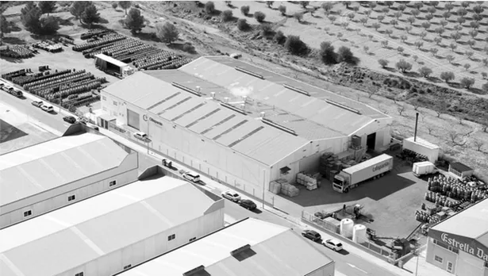

- Razón social del beneficiario
- OLISPANIA ACEITUNAS SOCIEDAD LIMITADA
- Nº de expediente proyecto
- PA2-010300-2024-46
PERTE en el sector agroalimentario
- Título del proyecto
- AMPLIACIÓN DE CAPACIDAD PRODUCTIVA EN INSTALACIONES EXISTENTES

Aceitunas, encurtidos y aliños:
el aperitivo completo, hecho en Murcia.
Bienvenido
Olispania Aceitunas, S.L. Empresa creada en 2012 tras la unión de dos familias con más de 30 años de experiencia en el sector, cuyo principal objetivo ha sido desarrollar un producto de máxima calidad.
Nuestra filosofía está también orientada a la excelencia en cuanto a la seguridad alimentaria y a la satisfacción del cliente, por ello mantenemos desde 2017 la certificación IFS con un nivel superior (96,99 sobre 100).
Nos interesa destacar nuestra amplia gama de rellenos entre los que se encuentran el de anchoa, pimiento, limón, salmón, gamba, chorizo, jamón y ajo.
Disponemos también de un surtido de aliños y sabores elaborados con las variedades Manzanilla, Verdial, Gordal, Cacereña y Cuquillo. Esto junto con nuestros encurtidos, completan el catálogo de este año 2026.
Trabajamos con el canal food service y con la gran distribución a nivel nacional e internacional, tanto con nuestras marcas (Olispania y Vitaloliva) como con la marca del distribuidor, en vidrio y en lata.


La norma internacional de mayor renombre que se centra en la gestión de un sistema efectivo para administrar y mejorar constantemente la calidad de sus productos.
Proyecto cofinanciado
Objetivos de la actuación: fomento del uso de energías renovables por las empresas, en particular las PYME.
Concedida
PERTE en el sector agroalimentario